Mis discos favoritos
Como introducción a la lista, quiero hacer un comentario sobre ella:
Esta lista no está numerada por la sencilla razón de que no creo que pueda elegir que discos de entre estos me gustan más que otros de la lista. La lista solo muestra los discos que mayor impresión me han dejado y que me han gustado, pero no los numero porque considero que sería afirmar que son los mejores de forma demasiado tajante.
La lista
- Voivod - Dimension Hatröss 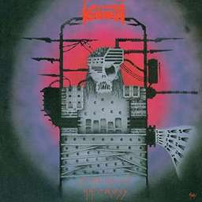
- Magma - Mekanïk Destruktïẁ Kommandöh
- Death - Symbolic (aunque aquí podría poner la discografía entera de Death, este disco es el que más me ha marcado dentro de ella) 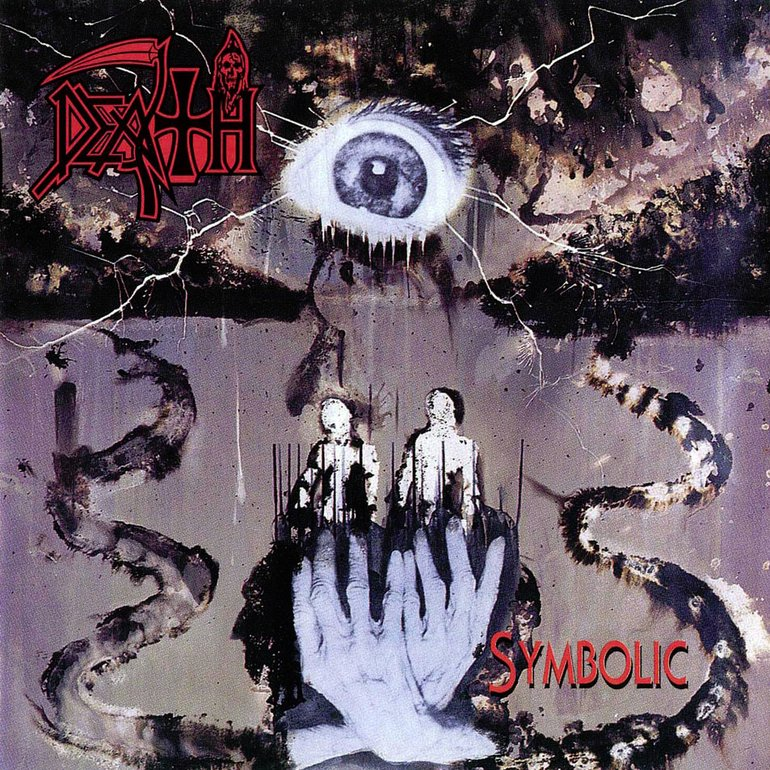
- Gorguts - Obscura
- Frank Zappa - Apostrophe (') 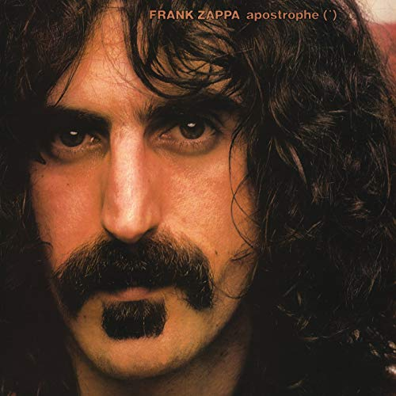
- Obscura - Akroasis
- King Crimson - Red (otro ejemplo de un grupo que me tienta a poner su discografía completa)
- Meshuggah - Chaosphere
- Morbid Angel - Covenant 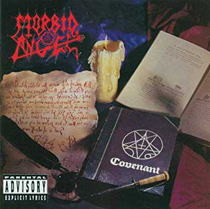
- Bolt Thrower - War Master 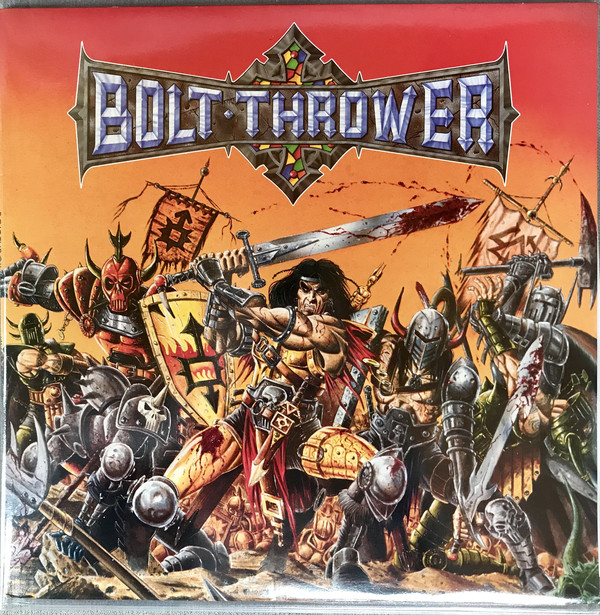
- John Coltrane - Giant Steps
- Miles Davis - Bitches Brew
- Mahavishu Orchestra - Birds Of Fire
- Ornette Coleman - Tanto Free Jazz: A Collective Improvisation como The Shape Of Jazz To Come 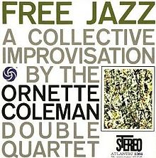
- Brian Eno - Ambient 1: Music For Airports 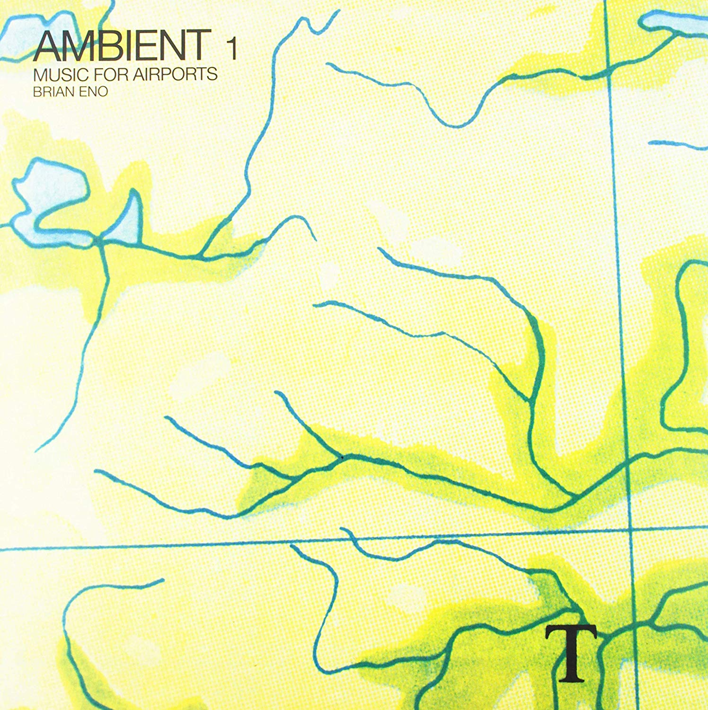
- David Bowie - La Trilogía de Berlín (Low, Heroes y Lodger) 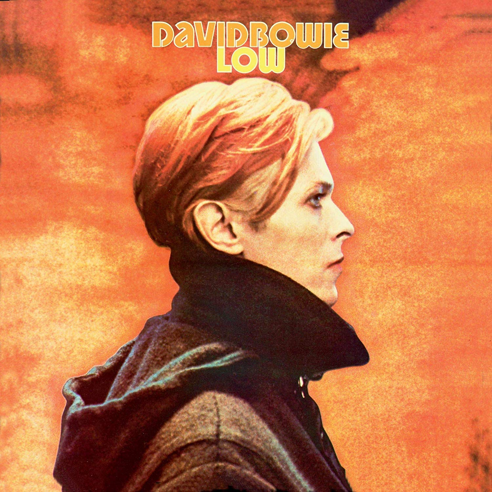
- Talking Heads - Remain In Light
- Swans - Soundtracks For The Blind 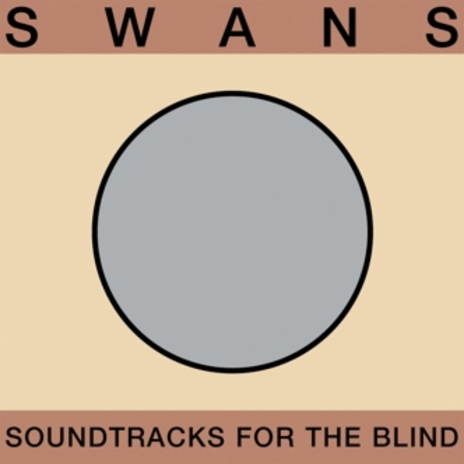
- Celtic Frost - Into The Pandemonium


 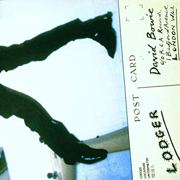
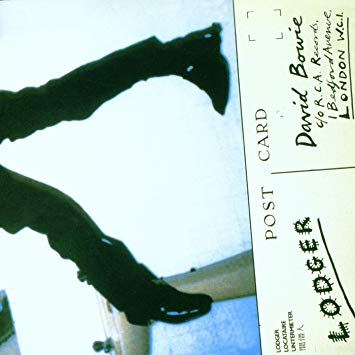